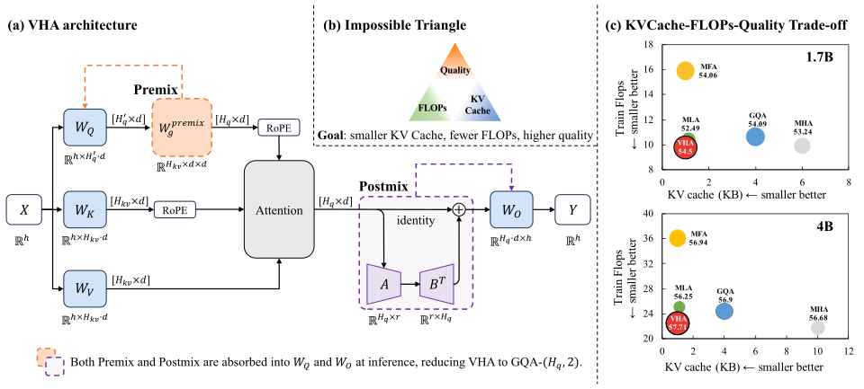

Picture a library with only two reference desks instead of eight. Readers would all ask the same questions, so each reader gets a slightly different lens before walking up, and afterward the readers quickly compare notes. On opening day the lenses and the note sharing are built into the readers themselves, so the library runs exactly like any two-desk library.
안내 데스크가 여덟 개가 아니라 두 개뿐인 도서관을 떠올려 보자. 그대로면 이용자들이 모두 같은 질문만 하게 되니, 데스크에 가기 전에 각자 조금씩 다른 렌즈를 끼고, 다녀온 뒤에는 메모를 잠깐 맞춰 본다. 정식 개관 날에는 렌즈와 메모 교환이 이용자 몸에 아예 배어 있어서, 도서관은 평범한 데스크 두 개짜리 도서관과 똑같이 돌아간다.
How it works: richer training, plain inference작동 방식은 풍부한 학습, 평범한 추론
Premix sits on the query path and Postmix on the output path; neither touches K or V. So the cache is exactly that of 2 KV heads.
Premix는 쿼리 경로에, Postmix는 출력 경로에 있고 둘 다 K와 V는 건드리지 않는다. 그래서 캐시는 정확히 KV 헤드 2개 분량이다.

- Halve queries, keep 2 KV heads.쿼리는 절반, KV 헤드는 2개.At 1.7B the shape goes from 16-8-8 to 8-2-2, 1 KB of cache per layer per token.1.7B에서는 16-8-8 구성이 8-2-2가 되고, 캐시는 층당 토큰당 1 KB다.
- Premix makes virtual heads.Premix로 가상 헤드를 만든다.One d×d matrix per KV group, initialized near identity, gives each group its own query view.KV 그룹마다 항등 근처에서 시작하는 d×d 행렬 하나가 그룹별로 다른 쿼리 시각을 준다.
- Postmix, then fold.Postmix 후 접어 넣기.A rank-4 head mixer starts at zero; after training both maps merge into the weights.0에서 시작하는 rank-4 헤드 혼합기를 거치고, 학습이 끝나면 두 변환 모두 가중치에 합쳐진다.
Key point: smallest cache without the FLOPs bill핵심은 FLOPs 대가 없이 가장 작은 캐시
VHA ties MFA for the smallest cache, and among small-cache designs only it cuts training FLOPs at every scale. Halving the query projection pays for both add-ons.
VHA는 캐시가 MFA와 함께 가장 작고, 캐시가 작은 설계 중 모든 규모에서 학습 FLOPs를 줄이는 것은 VHA뿐이다. 쿼리 투영을 절반으로 줄인 몫으로 두 장치의 비용을 치르기 때문이다.
Results: the compressed shape becomes the winner압축한 구성이 오히려 1등이 된다
The same 8-2-2 shape goes from 1.71 points below GQA-8 to 0.41 above once Premix and Postmix are added. Neither module alone gets there.
같은 8-2-2 구성이 Premix와 Postmix를 더하면 GQA-8보다 1.71점 낮던 데서 0.41점 높아진다. 둘 중 하나만으로는 그만큼 오르지 못한다.
| Config (Q-K-V) | KV cache | Avg | vs GQA-8 |
|---|---|---|---|
| GQA 16-8-8 | 4.00 | 54.09 | — |
| GQA 16-2-2 | 1.00 | 53.09 | −1.00 |
| GQA 8-2-2 | 1.00 | 52.38 | −1.71 |
| 8-2-2 + Premix only | 1.00 | 53.31 | −0.78 |
| 8-2-2 + Postmix only | 1.00 | 53.95 | −0.14 |
| VHA 8-2-2 | 1.00 | 54.50 | +0.41 |
When a compressed shape loses quality, try training-only linear reparameterizations that fold back into it. You keep every existing GQA kernel in vLLM and SGLang and pay nothing at inference.압축한 구성이 품질을 잃는다면, 학습 때만 쓰고 그 구성으로 다시 접히는 선형 재매개변수화를 시도해 보자. vLLM과 SGLang의 기존 GQA 커널을 그대로 쓰면서 추론 비용은 전혀 늘지 않는다.
Small-scale gains are +0.05 to +0.81 on zero-shot multiple choice, near run-to-run noise at some scales. The 30B and 128K results are single industrial runs, and decoding speedup is argued, not measured.작은 규모의 향상은 zero-shot 객관식에서 +0.05~+0.81점으로, 일부 규모에서는 실행 간 편차와 비슷하다. 30B와 128K 결과는 사내 실행 한 번씩이고, 디코딩 가속은 이론으로 주장할 뿐 측정하지 않았다.